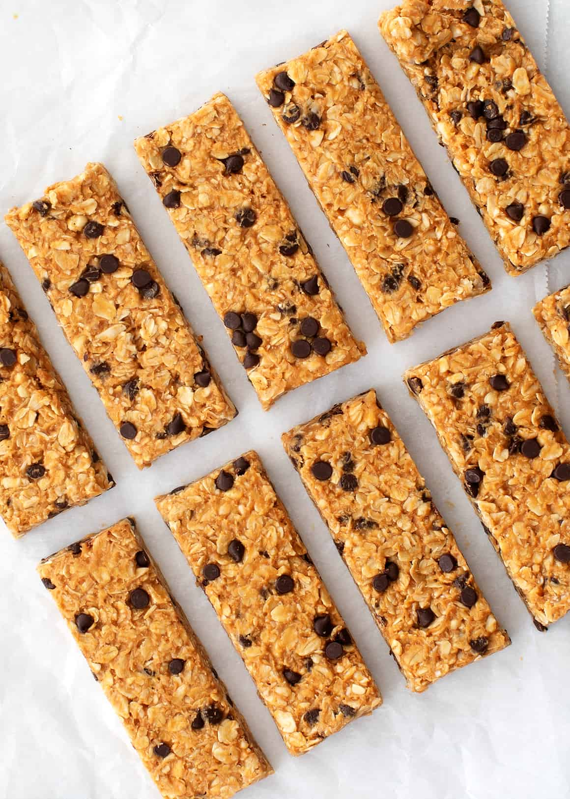
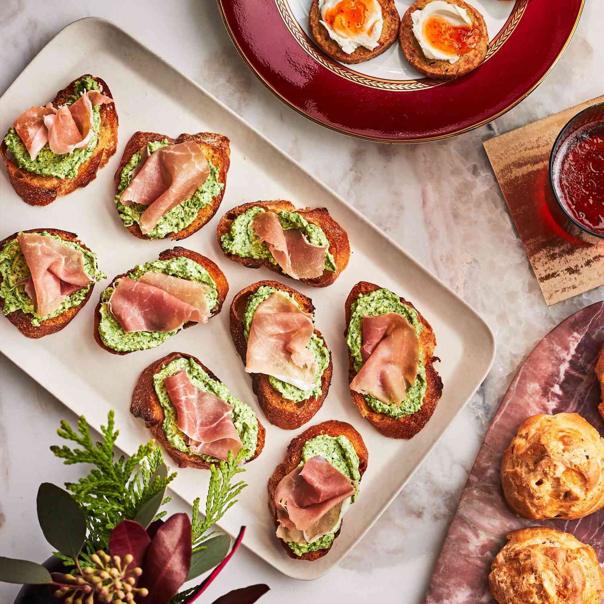

Vegan Snack Recipes
Vegan Trail Mix

Ingredients:
- 1 cup almonds
- 1 cup cashews
- 1 cup dried cranberries
- 1 cup raisins
- 1 cup pumpkin seeds
- 1 cup sunflower seeds
- 1 cup dark chocolate chips
Procedure:
- Combine all ingredients in a large bowl.
- Mix well to distribute evenly.
- Store in an airtight container.
- Enjoy as a quick, nutritious snack.
Vegan Muffins

Ingredients:
- 2 cups flour
- 1 cup sugar
- 1 cup almond milk
- 1/2 cup vegetable oil
- 2 teaspoons baking powder
- 1 teaspoon vanilla extract
- 1/2 teaspoon salt
- 1 cup blueberries (or any fruit of choice)
Procedure:
- Preheat oven to 375°F (190°C).
- In a large bowl, mix flour, sugar, baking powder, and salt.
- Add almond milk, vegetable oil, and vanilla extract. Stir until just combined.
- Gently fold in blueberries.
- Spoon batter into muffin tins lined with paper cups.
- Bake for 20-25 minutes until a toothpick inserted comes out clean.
- Let cool before serving.
Classic Hummus

Ingredients:
- 1 can (15 oz) chickpeas, drained and rinsed
- 1/4 cup fresh lemon juice
- 1/4 cup tahini
- 1 small garlic clove, minced
- 2 tablespoons olive oil, plus more for serving
- 1/2 teaspoon ground cumin
- Salt to taste
- 2-3 tablespoons water
- Pinch of paprika, for garnish
Procedure:
- In a food processor, combine tahini and lemon juice. Process for 1 minute until smooth and creamy.
- Add the minced garlic, olive oil, cumin, and a pinch of salt to the mixture. Process for another 30 seconds, scraping down the sides as needed.
- Add the drained chickpeas to the food processor. Process for 1-2 minutes until the mixture is thick and smooth.
- While the food processor is running, slowly add 2-3 tablespoons of water until the hummus reaches your desired consistency.
- Taste and adjust seasonings as needed.
- Transfer the hummus to a serving bowl, drizzle with olive oil, and sprinkle with paprika.
- Serve with pita bread, fresh vegetables, or as a spread.
Roasted Chickpeas

Ingredients:
- 1 can (15 oz) chickpeas, drained and rinsed
- 1 tablespoon olive oil
- 1 teaspoon smoked paprika
- 1/2 teaspoon garlic powder
- 1/2 teaspoon ground cumin
- Salt and pepper to taste
Procedure:
- Preheat oven to 400°F (200°C).
- Pat the chickpeas dry with a paper towel to remove excess moisture.
- In a bowl, toss the chickpeas with olive oil, smoked paprika, garlic powder, ground cumin, salt, and pepper until evenly coated.
- Spread the chickpeas on a baking sheet in a single layer.
- Roast in the preheated oven for 25-30 minutes, shaking the pan halfway through, until the chickpeas are crispy and golden brown.
- Remove from the oven and let cool slightly.
- Serve as a snack or add to salads for extra crunch.
Homemade Granola Bars

Ingredients:
- 2 cups rolled oats
- 1/2 cup almond butter or peanut butter
- 1/2 cup honey or maple syrup
- 1/2 cup chopped nuts (almonds, walnuts, etc.)
- 1/2 cup dried fruit (raisins, cranberries, etc.)
- 1/4 cup chocolate chips (optional)
- 1 teaspoon vanilla extract
- 1/4 teaspoon salt
Procedure:
- Preheat oven to 350°F (175°C).
- Line an 8x8 inch baking dish with parchment paper.
- In a large bowl, mix together the rolled oats, chopped nuts, and dried fruit.
- In a small saucepan, heat the almond butter and honey over low heat until melted and well combined.
- Remove from heat and stir in the vanilla extract and salt.
- Pour the almond butter mixture over the oat mixture and stir until everything is well coated.
- If using, fold in the chocolate chips.
- Press the mixture firmly into the prepared baking dish.
- Bake in the preheated oven for 15-20 minutes, or until the edges are golden brown.
- Remove from the oven and let cool completely in the baking dish.
- Once cooled, lift the parchment paper out of the dish and cut into bars.
- Store in an airtight container for up to a week.
Vegan Cookies

Ingredients:
- 1 cup flour
- 1/2 cup sugar
- 1/2 cup brown sugar
- 1/2 cup vegan butter
- 1/4 cup almond milk
- 1 teaspoon vanilla extract
- 1/2 teaspoon baking soda
- 1/2 teaspoon salt
- 1 cup vegan chocolate chips
Procedure:
- Preheat oven to 350°F (175°C).
- In a bowl, cream together vegan butter, sugar, and brown sugar.
- Add almond milk and vanilla extract. Mix well.
- In another bowl, mix flour, baking soda, and salt.
- Gradually add dry ingredients to the wet mixture. Stir until combined.
- Fold in vegan chocolate chips.
- Drop spoonfuls of dough onto a baking sheet.
- Bake for 10-12 minutes until edges are golden brown.
- Let cool on a wire rack before serving.
Non-Vegan Snack Recipes
Chicken Empanadas

Ingredients:
- 1 lb cooked chicken, shredded
- 1 onion, chopped
- 1 bell pepper, chopped
- 2 garlic cloves, minced
- 1 teaspoon cumin
- 1 teaspoon paprika
- Salt and pepper to taste
- 1 package empanada dough
- 1 egg, beaten
Procedure:
- Preheat oven to 375°F (190°C).
- In a pan, sauté chopped onion, bell pepper, and minced garlic until softened.
- Add shredded chicken, cumin, paprika, salt, and pepper. Stir well and cook for another 5 minutes.
- Roll out empanada dough and cut into circles.
- Place a spoonful of chicken mixture on each circle.
- Fold dough over and seal the edges with a fork.
- Brush with beaten egg.
- Bake for 20-25 minutes until golden brown.
- Serve warm.
Lamb Meatballs

Ingredients:
- 1 lb ground lamb
- 1/4 cup breadcrumbs
- 1/4 cup chopped parsley
- 1 small onion, finely chopped
- 2 garlic cloves, minced
- 1 egg, beaten
- 1 teaspoon cumin
- 1 teaspoon paprika
- Salt and pepper to taste
- 2 tablespoons olive oil
Procedure:
- Preheat oven to 375°F (190°C).
- In a large bowl, mix ground lamb, breadcrumbs, chopped parsley, onion, minced garlic, beaten egg, cumin, paprika, salt, and pepper.
- Shape mixture into small meatballs.
- Heat olive oil in a pan over medium heat.
- Fry meatballs until browned on all sides.
- Transfer to a baking sheet and bake for 10-15 minutes.
- Serve with dipping sauce.
Pork Dumplings

Ingredients:
- 1 cup ground pork
- 1/2 cup finely chopped cabbage
- 1 green onion, finely chopped
- 1 garlic clove, minced
- 1 teaspoon soy sauce
- 1 teaspoon sesame oil
- 1 package dumpling wrappers
Procedure:
- In a bowl, mix ground pork, chopped cabbage, green onion, minced garlic, soy sauce, and sesame oil.
- Place a small spoonful of filling in the center of each dumpling wrapper.
- Moisten the edges with water and fold to seal.
- Heat a pan over medium heat and add a little oil.
- Cook dumplings until bottoms are golden brown.
- Add a small amount of water to the pan, cover, and steam for 5-7 minutes until cooked through.
- Serve with soy sauce or dipping sauce of choice.
Shrimp on Seasoned Crackers

Ingredients:
- 1 lb cooked shrimp, peeled and deveined
- 1 sleeve of seasoned crackers (such as garlic or herb-flavored)
- 1/4 cup mayonnaise
- 1 tablespoon lemon juice
- 1 teaspoon Dijon mustard
- 1 tablespoon fresh dill, chopped
- Salt and pepper to taste
- Lemon wedges, for garnish
Procedure:
- In a small bowl, mix together the mayonnaise, lemon juice, Dijon mustard, fresh dill, salt, and pepper.
- Spread a small amount of the mayonnaise mixture on each cracker.
- Top each cracker with a cooked shrimp.
- Arrange the shrimp-topped crackers on a serving platter.
- Garnish with lemon wedges and additional fresh dill if desired.
- Serve immediately.
Smoked Fish Dip

Ingredients:
- 8 oz smoked fish (such as mackerel or trout), flaked
- 4 oz cream cheese, softened
- 1/4 cup mayonnaise
- 2 tablespoons lemon juice
- 1 tablespoon prepared horseradish
- 1 teaspoon Worcestershire sauce
- 2 green onions, finely chopped
- Salt and pepper to taste
- Crackers or baguette slices, for serving
Procedure:
- In a medium bowl, combine the softened cream cheese and mayonnaise until smooth.
- Add the lemon juice, horseradish, Worcestershire sauce, and green onions, mixing until well combined.
- Gently fold in the flaked smoked fish.
- Season with salt and pepper to taste.
- Chill in the refrigerator for at least 1 hour to allow the flavors to meld.
- Serve with crackers or baguette slices.
Creamy Spinach Ricotta Crostini

Ingredients:
- 1 baguette, sliced into 1/2 inch slices
- 1 cup ricotta cheese
- 1 cup fresh spinach, chopped
- 1/4 cup grated Parmesan cheese
- 1 clove garlic, minced
- 2 tablespoons olive oil, plus more for brushing
- Salt and pepper to taste
- 1/4 teaspoon red pepper flakes (optional)
Procedure:
- Preheat oven to 375°F (190°C).
- Brush the baguette slices with olive oil and place them on a baking sheet.
- Toast the baguette slices in the preheated oven for 5-7 minutes, or until golden and crispy.
- In a medium bowl, mix together the ricotta cheese, chopped spinach, Parmesan cheese, minced garlic, 2 tablespoons olive oil, salt, pepper, and red pepper flakes (if using).
- Spread a generous amount of the spinach ricotta mixture onto each toasted baguette slice.
- Return the crostini to the oven and bake for an additional 5-7 minutes, or until the topping is heated through.
- Remove from the oven and let cool slightly.
- Serve warm.